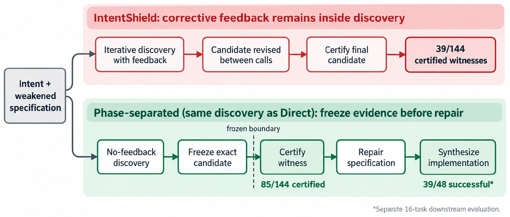
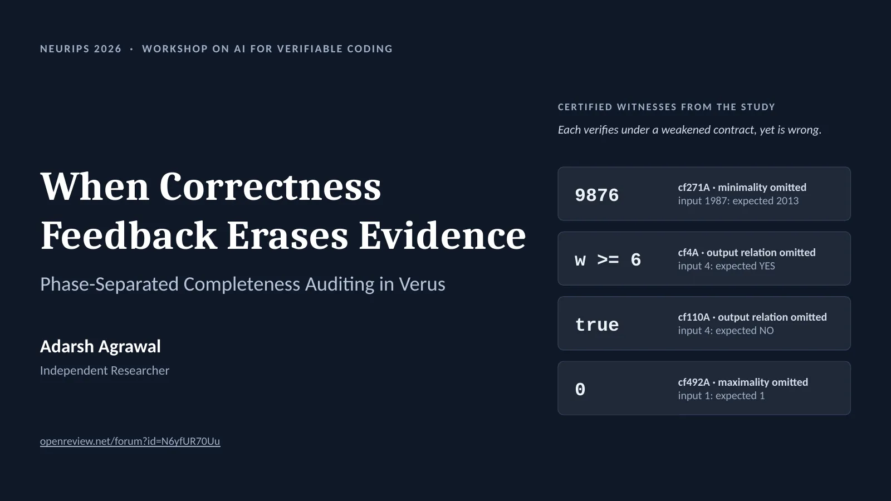
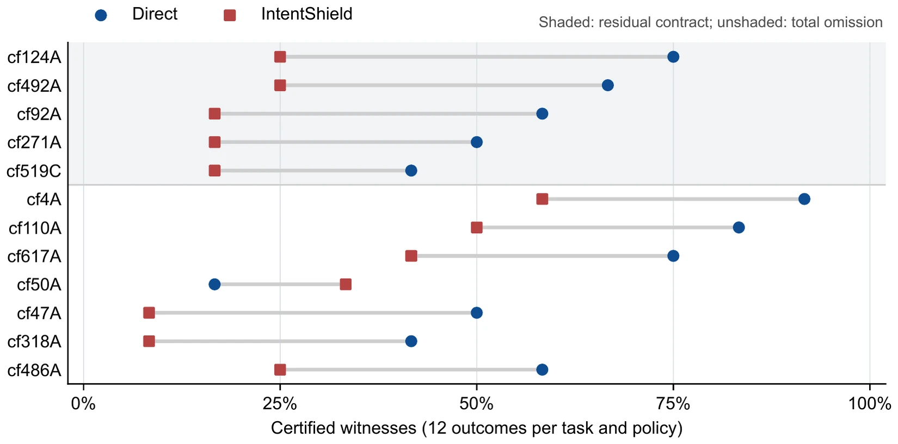
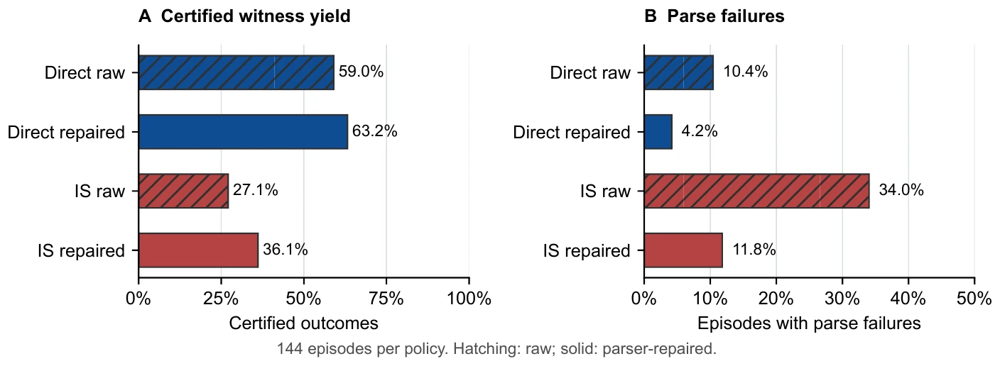
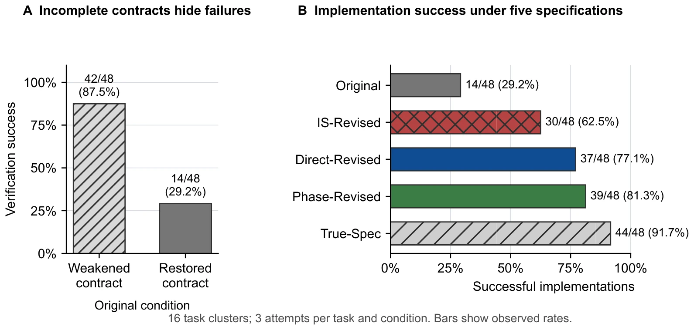
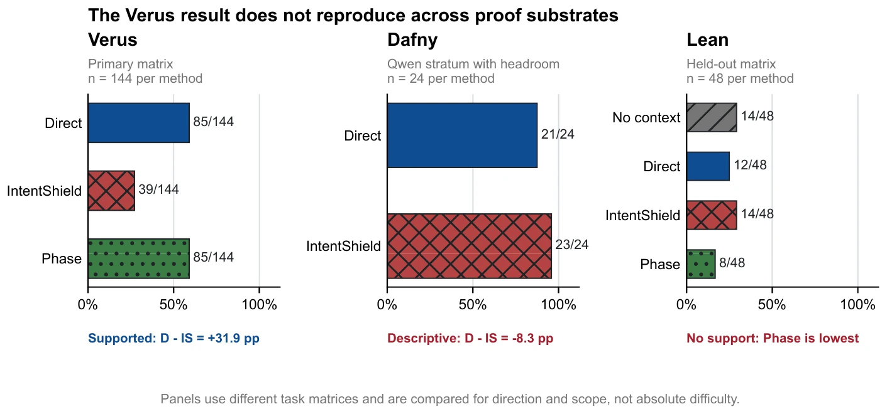

Poster at the NeurIPS 2026 Workshop on AI for Verifiable Coding
When Correctness Feedback Erases EvidencePhase-Separated Completeness Auditing in Verus
Feedback that helps a model fix a program works against an audit that needs wrong programs as evidence. On 12 Verus/Rust tasks, discovery without correctness feedback certified a completeness witness in 85 of 144 outcomes; IntentShield’s feedback loop did so in 39. In a separate 16-task study, contracts repaired from the frozen evidence reached 81.3% implementation success, against 62.5% for contracts repaired from IntentShield’s candidates.

Abstract
Correctness feedback can undermine specification-completeness auditing by suppressing programs that satisfy a written contract but violate intended behavior. We evaluate this objective reversal on 12 Verus/Rust tasks across four model families under matched call budgets. Independent no-feedback discovery more than doubles certified-witness yield relative to IntentShield’s corrective-feedback loop (59.0% versus 27.1%). A format-matched iterative control shows that the feedback-content contrast is larger than the independent-restart contrast. The advantage persists across model families and after parser repair. A separate phase-separated execution reproduces the aggregate yield without reusing responses, and most certified witnesses also expose held-out disagreements. Preserving this evidence improves downstream specification repair: Phase-Revised contracts achieve 81.3% implementation success, compared with 62.5% for IS-Revised, while Direct-Revised performs similarly. Both no-feedback witness sources substantially outperform weakened specifications. Available Dafny and Lean evaluations do not reproduce the discovery effect, bounding the finding to the studied Verus/Rust setting. The design rule is clear: freeze and certify evidence of incompleteness before introducing correctness-oriented repair.
Key findings
- 59.0% vs 27.1%
Certified-witness yield, Direct against IntentShield, with 144 outcomes per policy. Direct leads on 11 of 12 tasks (exact sign test p = 0.006), and the mean task-level difference is 31.9 points, with a task-bootstrap 95% interval of [21.5, 38.9].
- 69.6%
Share of that 31.9-point gap, 22.2 points, that separates IntentShield from a format-matched control. The control keeps IntentShield’s template and candidate history but replaces every feedback field with “[not evaluated]”, and it certifies 49.3%. Independent restarts account for the other 9.7 points. This is an observed-rate decomposition, not a mediation analysis.
- 92.9%
Of Direct’s 85 certified witnesses, 79 also disagree on a test case withheld from certification.
- 85 = 85
A separate phase-separated run, 48 hours later with fresh requests and no reused responses, certifies the same number of witnesses. Cell-level agreement is 84.7% (Cohen’s κ = 0.68), and 43 of the 74 co-certified cells hold distinct expressions.
- 81.3% vs 62.5%
Implementation success with Phase-Revised versus IS-Revised contracts (16 tasks, three attempts each). Phase-Revised wins on nine tasks and ties on seven, with no losses (two-sided sign test p = 0.004); Direct-Revised reaches 77.1%.
Talk slides

Auditing a contract for what it forgot
A verifier can discharge every obligation in a contract while the program still violates its author’s intent. A completeness witness makes that gap concrete: a program the weakened contract accepts but the task rejects. A candidate counts as a certified witness only if it passes four gates:
- Admitted. It verifies under the weakened contract.
- Gap-exposing. Restoring the omitted postcondition makes verification fail.
- Executable. It compiles and runs as Rust.
- Wrong. It disagrees with at least one official test case.
Ordinary synthesis uses compiler, verifier, and test feedback to move a candidate toward intended behavior. In an audit, the same feedback erases the evidence. IntentShield keeps corrective feedback inside discovery. Direct makes three independent calls with nothing carried over. Phase runs Direct’s discovery protocol again as a separate execution, freezes the selected candidate, certifies it, and only then hands it to repair (Figure 1). Every policy gets the same three-call budget on 12 VeriContest tasks across four model families: Claude Sonnet 5, DeepSeek V3.2, Devstral 2, and Qwen3-Coder-480B.
Feedback more than halves witness yield
Direct certifies 85 of 144 outcomes (59.0%) and IntentShield 39 (27.1%). The gap appears in both task strata: 38.3 points on the five residual-contract tasks and 27.4 points on the seven total-omission controls. The only reversal is cf50A, where IntentShield certifies four outcomes to Direct’s two.

Syntax repair does not close the gap
A parser-repair wrapper closes unmatched brackets, removes semicolons, and extracts the expression before certification. It cuts parse failures from 34.0% to 11.8% for IntentShield and from 10.4% to 4.2% for Direct, yet certified yield stays 27.1 points apart (63.2% versus 36.1%).

Preserved witnesses make better contracts
Incomplete contracts hide real failures: 42 of 48 implementations verify against the weakened contracts, but only 14 still verify once the omitted postcondition is restored. Repairing contracts from preserved witnesses recovers most of that gap. Phase-Revised contracts reach 39 of 48 successful implementations (81.3%), or 88.6% of the True-Spec count, against 30 of 48 (62.5%) for IS-Revised.

Scope and limitations
- Bounded to Verus
- Available Dafny and Lean evaluations do not reproduce the discovery effect (Figure 4). In the Dafny Qwen stratum IntentShield leads by 8.3 points, and in Lean the phase-separated policy is lowest.
- Narrow benchmark
- Twelve competitive-programming functions with expression-level Rust. An eight-task extension agrees (51.0% versus 21.9%) but is preliminary.
- Hosted models
- Provider-default decoding and non-seeded repeats limit exact replay; all 1,728 primary prompts and responses are archived.
- Why Verus may differ
- Rust typing, ownership, and arithmetic obligations give feedback a rich correction surface. This is a substrate-specific hypothesis, not a measured mediator.
The paper recommends treating witness reports like fuzzer findings: triage them with the specification author before changing code or contracts.

Reproducibility
The paper’s supplementary replay archive contains all 1,728 model-facing prompts and raw responses from the primary matrix, the parsed expression for every call, selection scores and rankings, and the outputs of all four certification gates, along with the format-matched and parser-repair logs. Re-executing the experiments also needs the official oracle cases and matching Rust and Verus toolchains, and provider defaults and stochastic hosted models rule out guaranteed response-identical regeneration.
Cite this paper
@inproceedings{agrawal2026intentshield,
title={When Correctness Feedback Erases Evidence: Phase-Separated Completeness Auditing in Verus},
author={Agrawal, Adarsh},
booktitle={NeurIPS 2026 Workshop on AI for Verifiable Coding: Human-Aligned Collaborative Agents for Autoformalization, Proofs, and Heuristics},
year={2026},
url={https://openreview.net/pdf?id=N6yfUR70Uu}
}